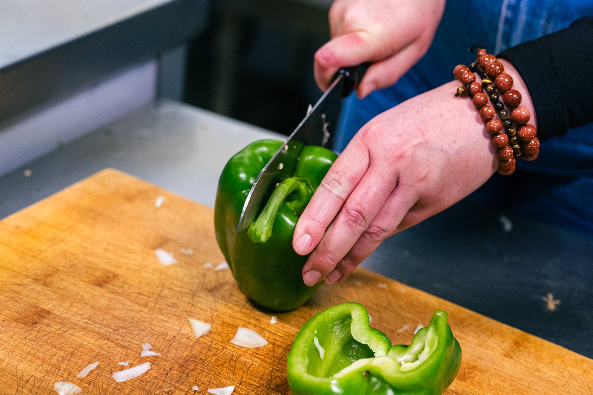

Ton don part sur le terrain.
Il paie les courses de la cuisine, les barquettes de la maraude et fait tourner le café solidaire.
407plats chauds
Le samedi 13 septembre 2025, 165,38 € de courses ont suffi pour cuisiner 407 plats chauds avec les invendus récupérés. Sur toute l’année 2025, 6 738 € d’achats ont complété les dons pour 14 859 repas. Chaque euro compte, et se voit.
Donner.
Par HelloAsso ou par PayPal, comme tu préfères.
Avec HelloAsso
Ton soutien passe par l’adhésion 2026. Paiement sécurisé, et ton reçu fiscal arrive automatiquement par mail.
Soutenir sur HelloAssoAvec PayPal
Si tu as déjà un compte PayPal. Pour recevoir ton reçu fiscal, écris-nous après ton don.
Donner sur PayPalDes invendus, du matériel, des vêtements ? Écris-nous, on vient les chercher quand on peut.
Ce que ça te coûte vraiment.
O Cœur de la Rue est une association d’intérêt général. Tes dons ouvrent droit à une réduction d’impôt.